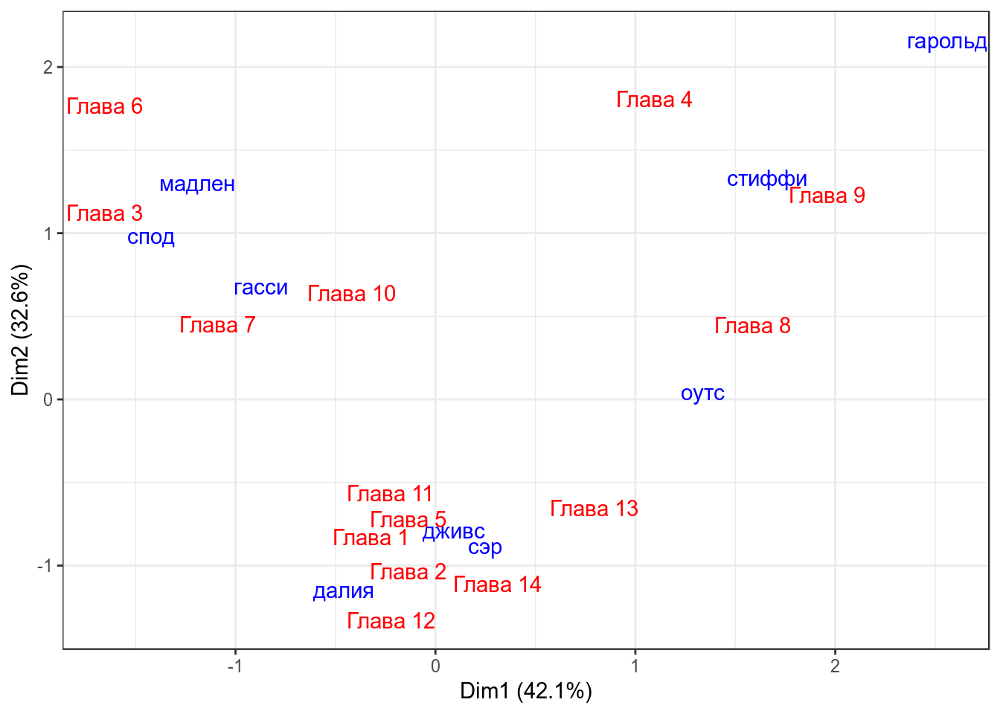

- Уменьшение размерности: CA и MCA
Г. Мороз
1. Введение
1.1 Библиотеки
library(tidyverse)
library(ca)1.2 Фамильная честь Вустеров
В данной лекции я буду использовать данные из романа П. Г. Вудхауза “Фамильная честь Вустеров”. В датасете собраны несколько переменных:
- chapter — номер главы
- гарольд — количество появлений имени в каждой из глав
- гасси — количество появлений имени в каждой из глав
- далия — количество появлений имени в каждой из глав
- дживс — количество появлений имени в каждой из глав
- мадлен — количество появлений имени в каждой из глав
- оутс — количество появлений имени в каждой из глав
- спод — количество появлений имени в каждой из глав
- стиффи — количество появлений имени в каждой из глав
- сэр — количество появлений имени в каждой из глав
wodehouse <- read.csv("https://goo.gl/bSxdMZ")
GGally::ggpairs(wodehouse[,-1])1.3 Нидерланлские каузативы
Dataset and description from paper by Natalia Levshina. Modern standard Dutch has two periphrastic causatives with the infinitive: the constructions with doen ‘do’ and laten ‘let’. The study is based on an 8-million token corpus of Netherlandic and Belgian Dutch. After the manual cleaning, there were left with 6,808 observations, which were then coded for seven semantic, syntactic, geographical and thematic variables.
- Aux — a factor that specifies the causative auxiliary with levels laten and doen.
- Country — a factor with levels NL (the Netherlands) and BE (Belgium).
- Causation — a factor that describes the type of causation with levels Affective, Inducive, Physical and Volitional
- EPTrans — a factor that specifies the transitivity of the Effected Predicate with levels Intr (intransitive) and Tr (transitive).
- EPTrans1 — a factor with levels Intr and Tr. It is very similar to the previous one, except for a few observations.
dutch_caus <- read.csv("https://goo.gl/2yAR3T")2. CA
rownames(wodehouse) <- wodehouse$chapter
ca <- ca(wodehouse[-1])
ca##
## Principal inertias (eigenvalues):
## 1 2 3 4 5 6 7
## Value 0.269248 0.208594 0.063634 0.041687 0.034383 0.012929 0.008438
## Percentage 42.07% 32.59% 9.94% 6.51% 5.37% 2.02% 1.32%
## 8
## Value 0.00111
## Percentage 0.17%
##
##
## Rows:
## Глава 1 Глава 10 Глава 11 Глава 12 Глава 13 Глава 14
## Mass 0.042924 0.043595 0.087860 0.048960 0.047619 0.118042
## ChiDist 0.657319 0.503827 0.480650 0.871805 0.584273 0.664054
## Inertia 0.018546 0.011066 0.020298 0.037212 0.016256 0.052053
## Dim. 1 -0.323423 -0.420878 -0.225240 -0.223638 0.791993 0.310647
## Dim. 2 -0.829703 0.638712 -0.563479 -1.328967 -0.653949 -1.109652
## Глава 2 Глава 3 Глава 4 Глава 5 Глава 6 Глава 7
## Mass 0.071764 0.085178 0.077800 0.095238 0.027498 0.113347
## ChiDist 0.594474 1.048459 1.064355 0.412476 1.195103 0.778320
## Inertia 0.025361 0.093633 0.088136 0.016203 0.039275 0.068663
## Dim. 1 -0.135807 -1.654098 1.093472 -0.136037 -1.654453 -1.088398
## Dim. 2 -1.034327 1.123948 1.807475 -0.718441 1.770157 0.450153
## Глава 8 Глава 9
## Mass 0.103957 0.036217
## ChiDist 0.966054 1.246820
## Inertia 0.097019 0.056302
## Dim. 1 1.587645 1.958257
## Dim. 2 0.446586 1.232483
##
##
## Columns:
## гарольд гасси далия дживс мадлен оутс
## Mass 0.036217 0.116700 0.046948 0.205231 0.048960 0.039571
## ChiDist 1.734289 0.641171 0.882726 0.429982 1.146279 1.162493
## Inertia 0.108933 0.047976 0.036582 0.037944 0.064332 0.053476
## Dim. 1 2.558838 -0.872498 -0.458448 0.091883 -1.191267 1.337131
## Dim. 2 2.163571 0.681049 -1.147145 -0.787378 1.304640 0.046829
## спод стиффи сэр
## Mass 0.135480 0.083836 0.287056
## ChiDist 0.948004 1.145983 0.453071
## Inertia 0.121757 0.110100 0.058925
## Dim. 1 -1.422440 1.658337 0.247022
## Dim. 2 0.985778 1.331784 -0.882475summary(ca) # extended results## Warning in abbreviate(rnames.temp, 4): abbreviate used with non-ASCII chars
## Warning in abbreviate(rnames.temp, 4): abbreviate used with non-ASCII chars
## Warning in abbreviate(rnames.temp, 4): abbreviate used with non-ASCII chars## Warning in abbreviate(cnames.temp, 4): abbreviate used with non-ASCII chars##
## Principal inertias (eigenvalues):
##
## dim value % cum% scree plot
## 1 0.269248 42.1 42.1 ***********
## 2 0.208594 32.6 74.7 ********
## 3 0.063634 9.9 84.6 **
## 4 0.041687 6.5 91.1 **
## 5 0.034383 5.4 96.5 *
## 6 0.012929 2.0 98.5 *
## 7 0.008438 1.3 99.8
## 8 0.001110 0.2 100.0
## -------- -----
## Total: 0.640025 100.0
##
##
## Rows:
## name mass qlt inr k=1 cor ctr k=2 cor ctr
## 1 | Глава1 | 43 398 29 | -168 65 4 | -379 332 30 |
## 2 | Глава10 | 44 523 17 | -218 188 8 | 292 335 18 |
## 3 | Глава11 | 88 346 32 | -117 59 4 | -257 287 28 |
## 4 | Глава12 | 49 502 58 | -116 18 2 | -607 485 86 |
## 5 | Глава13 | 48 756 25 | 411 495 30 | -299 261 20 |
## 6 | Глава14 | 118 641 81 | 161 59 11 | -507 582 145 |
## 7 | Глава2 | 72 646 40 | -70 14 1 | -472 631 77 |
## 8 | Глава3 | 85 910 146 | -858 670 233 | 513 240 108 |
## 9 | Глава4 | 78 886 138 | 567 284 93 | 826 602 254 |
## 10 | Глава5 | 95 662 25 | -71 29 2 | -328 633 49 |
## 11 | Глава6 | 27 974 61 | -858 516 75 | 808 458 86 |
## 12 | Глава7 | 113 596 107 | -565 527 134 | 206 70 23 |
## 13 | Глава8 | 104 772 152 | 824 727 262 | 204 45 21 |
## 14 | Глава9 | 36 868 88 | 1016 664 139 | 563 204 55 |
##
## Columns:
## name mass qlt inr k=1 cor ctr k=2 cor ctr
## 1 | гаро | 36 911 170 | 1328 586 237 | 988 325 170 |
## 2 | гасс | 117 734 75 | -453 499 89 | 311 235 54 |
## 3 | дали | 47 425 57 | -238 73 10 | -524 352 62 |
## 4 | джив | 205 712 59 | 48 12 2 | -360 699 127 |
## 5 | мадл | 49 561 101 | -618 291 69 | 596 270 83 |
## 6 | оутс | 40 357 84 | 694 356 71 | 21 0 0 |
## 7 | спод | 135 832 190 | -738 606 274 | 450 226 132 |
## 8 | стиф | 84 846 172 | 860 564 231 | 608 282 149 |
## 9 | сэр | 287 871 92 | 128 80 18 | -403 791 224 |wodehouse_col <- data.frame(ca$colcoord)
wodehouse_col$rows <- rownames(ca$colcoord)
wodehouse_row <- data.frame(ca$rowcoord)
wodehouse_row$rows <- rownames(ca$rowcoord)
wodehouse_col %>%
ggplot(aes(Dim1, Dim2, label = rows))+
geom_text(color = "blue")+
geom_text(data = wodehouse_row, color = "red")+
theme_bw()+
labs(x = "Dim1 (42.1%)",
y = "Dim2 (32.6%)")
Сравните с соответствующими данными PCA:
3. MCA
MCA <- MASS::mca(dutch_caus[,-1])
MCA## Call:
## MASS::mca(df = dutch_caus[, -1])
##
## Multiple correspondence analysis of 500 cases of 7 factors
##
## Correlations 0.577 0.458 cumulative % explained 9.62 17.25dutch_caus <- cbind(dutch_caus, MCA$rs)
variables <- as_data_frame(MCA$cs)
variables$var_names <- rownames(MCA$cs)
dutch_caus %>%
ggplot(aes(`1`, `2`))+
geom_point(aes(color = Aux))+
stat_ellipse(aes(color = Aux))+
geom_text(data = variables, aes(`1`, `2`, label = var_names))+
theme_bw()+
scale_x_continuous(limits = c(-0.015, 0.02))## Warning: Removed 1 rows containing missing values (geom_text).4. DCA
Комбинация CA и дискрименантного анализа называется Discriminant Correspondence Analysis.
Домашнее задание 5 (до 26.02.2019)
Домашнее задание нужно выполнять в отдельном rmarkdown файле. Получившийся файл следует помещать в соответствующую папку в своем репозитории на гитхабе. Более подробные инструкции см. на этой странице.
5.1
Скачайте датасет chairs, в котором собраны разные описания экземпляров из немецких он-лайн каталогов, отнесенным к категориям Stuhl ‘стул’ or Sessel ‘кресло’. В датасете 19 переменных:
Shopa factor that describes the online store with levels ikea.de, Moebel-Profi.de and roller.de.WordDEa factor that describes the specific lexical category.Categorya factor that describes the more general lexical category (usually the last element of a composite noun), with levels Sessel and Stuhl.Functiona factor with levels Eat, NotSpec, Outdoor, Relax and Work.Agea factor with levels Adult and Children.Backa factor with levels Adjust, High, Low and Mid.Softa factor with levels No, Pad and Yes.Armsa factor with levels No and Yes.Upholsta factor with levels No and Yes.MaterialSeata factor with levels Fabric, Leather, Loom_natur, Metal, Paper, Plastic, Polyamide, Rattan, Steel and Wood.SeatHeighta factor with levels Adjust, High and Norm.SeatDeptha factor with levels Adjust, Deep and Norm.Swivela factor with levels No and YesRolla factor with levels No and Yes.Rocka factor with levels No and Rock.AddFunctionsa factor with levels Bed, No and Table.Reclinea factor with levels No and Yes.ReclineBacka factor with levels No and Yes.SaveSpacea factor with levels collapse, No and stack.
Используйте все переменные кроме переменных Shop, WordDE и Category, чтобы построить MCA. Нарисуйте все наблюдения, раскрасьте их по переменной Category и добавьте доверительные эллипсы. Сверху нанесите переменные из получившейся модели MCA. Получившийся график ggplot запустите в консоль.
5.2
Проанализируйте полученные результаты. Что Вы можете сказать на основе полученных результатов про категории Stuhl и Sessel в немецком? Что Вы можете сказать про переменные?
5.3
Cкачайте данные, содержащие 11 базовых цветов в разных подкорпусах Corpus of Contemporary American English (Davies 2008 - ). Учитывались только адъективные употребления. Постройте CA и нарисуйте биплот с переменными из столбцов и строчек (без стрелочек). Получившийся график ggplot запустите в консоль.
5.4
Проинтерпретируйте полученные результаты.